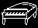

Watchers and wanderers,
How was UNDEREVENT? Most of us watched it, and had a fun time. (I think my favorite announcement was Deltafall. It looks SO cool, and I've been accompanying the gameplay snippets from the official account.)
This community is filled to the brim with groundbreaking, jaw-dropping projects, and we're happy we had the honor to participate last time! We also have other fan contents we look forward to seeing.
By the way, did you know Deltamon, one of the amazing projects announced in UNDEREVENT, is directed by one of our team members? We directors had no idea! We're so proud of them...
That said, sorry we weren't there. We hope this very long newsletter fills in the WM-shaped hole in your heart.
It's been a while, and things have changed considerably. Our team has become larger than ever before, boasting over 20 hardworking team members (and counting!) giving it their all!
As we continue working on the Pantheon of the Discarded, there are many things we believe are still left to transmit over to you.
Please, take some time, and enjoy reading what we have to show.

DISCORD SERVER
Now that our showcase server is open to the public in Discord, we intend to share much more about our project, as has been the goal all along with our surge into relatively constant activity in our accounts, before we very quickly jumped into bigger, more strewn-out posts about the shadowbosses.
As the posts came along, we realized that preparing elaborate posts fit for this type of platform would redirect precious focus & efforts away from the real project. With Discord as a more casual channel for communication, we can send out things at a higher variety (and less context) than before - like this, for instance:

by @beruki263
Of course, this increases the possibility that we post content that may have been or futurely be scrapped and discarded - but that’s just gonna be part of the charm.
Maybe we could even call it the Server of the Discarded… or not, since that would imply the members inside are all discarded, rather than the content. They’re just poor souls waiting to see discarded characters and explore discarded areas in a game we very much hope isn’t gonna be discarded in the future.
…The word “discarded” is starting to lose meaning at this point.
THE GAME

Let's go over the game once more.
Pantheon of the Discarded is a DELTARUNE fan game currently being produced in the KRISTAL Engine, and it follows a scenario in which the Fun Gang (or most of it) finds themselves in a world darker than dark itself, reaching into the vast expanse of different universes to fulfill an only purpose: collect SHADOW CRYSTALS from the mysterious dwellers unseen by their worlds.
While it picks up where the original DELTARUNE left off, and follows some basic foundations determined by our own prediction DELTARUNE · WM, the game follows no traditional storyline, and stands firmly as a “What If” spin-off to both DELTARUNE, DELTARUNE · WM, and the framework that shapes the community's usual "chapter takes".
One of our major focuses is to help our and our community’s creations outlive the release of the official chapters of DELTARUNE. This means that the game will boast characters, in cameo or content, authored by other DELTARUNE fan-creators who collaborated with the team to bring their ideas to life!

WHAT ABOUT THE PREVIOUS PREDICTION PROJECT?
To make things clear: We’ve turned our focus completely onto the Pantheon.
That is to say, because several parts from that project will be featured in PotD, we still create things for the old take and keep the details in mind. Not to mention, a lot of the core assumptions about DELTARUNE will be extracted from DELTARUNE · WM, so it's quite unlikely that we will fully detach from it anytime soon.
Therefore, creating PotD also means creating for DELTARUNE · WM, in a sense. These two projects are deeply connected, after all…

by Lua
Buuut, for the curious ones out there whose greatest wish is to know more about our original chapters, let’s talk a little bit more about them right now!
Our original project was born from throwaway theories about what awaits us in DELTARUNE, and, for a long time, that’s what it was - we probably spent a good 1 whole year just thinking about them. Against all supposition, however, the truth is that we don’t actually have that many things thought out and planned for the take as one would imagine.
Don’t get me wrong - we’ve done a LOT of stuff. A while back, one of our team members assembled all of our concept art so far into a little document and we got a pretty good notion of just how much we created. Roughly, all of our work counts up to a few hundreds(!!!) of artpieces, and the number just keeps growing! Not to mention all the spritework, the writing and the tons and tons of brainstorming…
But alas, narrative-wise, the old prediction project is far from done, and we’re also still looking out for opportunities to make extra visual & musical proofs-of-concept to share.
I will say that the sheer amount of work done specifically for Pantheon of the Discarded has far succeeded that of work done for our chapter takes… but that's beside the point.
Be as it may, to keep you up to speed, we do have a good notion of our take’s true story, in that:
- all Chapter settings from 3 to 6 have been determined;
- at least 3 shadowbosses (for up to 5) have been thought out (some more than others);
- the general plot, albeit in a state of constant metamorphosis, has a good direction;
- the storyline of Chapter 3 has been set in stone, and the focal points of Chapters 4 and 5 are pretty firm.

by Marnie
With the fangame project being the Makers’ full priority, we Makers ask of you not to expect anything more than what is already planned, that being the fangame itself.
DEVELOPMENT OF THE GAME
Activity in the work environment has never been this high, and in kind, our disposition is equally bright!
Much like the Chapter-based release system in the original DELTARUNE, we will release separated sections of PotD - which we will call “Waves” - each containing the next part of the game’s story, new locations and challenges, and an array of 3-5 dedicated “Shadowboss” segments.

Our first launch will be marked as a “DEMO” version, and contain the very first Wave, starting off the story with 3 original Shadowbosses. (Plus a familiar encounter you might’ve seen in the trailer…)
We want to release this DEMO as a means to introduce the public, and a metric to our assessment of the fangame’s development. From the second Wave onward, expect the appearance of all-new, community-sourced guest characters!!! (And also original characters)
All of our development sectors are focused and flourishing - a little disproportionately across the board, but it’s an expected part of the process.
Currently, we’re not sufficiently far into development to be able to give a completion percentage, much less a release date, for that matter. That said, everything’s running smoothly, and we intend to keep expanding our team to better adequate to the true scope of this game.

Now then!
Shall we share some of what we’re working on?
EVEN MORE PANTHEON !?
♪ Fallen Sanctum

"A small breath of respite from the crushing temple depths."

by Snokie
Ah, the Pantheon.
Limited by its artificial green barriers, it is a somewhat safe space in the endless expanse of the Abyss, and the main “world” you will explore in Pantheon of the Discarded - look, it’s in the name!

by Wilkus Milkus
The Pantheon links itself to the many different universes out there, and gives way for our Fun Gang to HIJACK and INVADE them, for the purpose of ransacking their ever-so-desired SHADOW CRYSTALS.
Of course, that doesn’t go without its own set of troubles - every little adventure, although short, is an ordeal in and of itself!

Although, all the many different worlds and characters are only half of the Fun. The Pantheon itself is a bajillion times bigger and more expansive than any of the individual worlds, and ripe for exploration.
Every new Wave contains not JUST a slew of shadowbosses to encounter, but ALSO even more of the Pantheon! We hope you will enjoy every aspect of this game.
Not to mention, we've implemented a number of gameplay changes you might only get to see in this new, fate-breaking world…

EVEN MORE CASTLE TOWN !?
♪ Your Castle Town
"This cozy cheery home suddenly feels so empty..."

Still, you’ll revisit some familiar places…

…and also uncover entirely unfamiliar ones.
EVEN MORE WORLDS !?
♪ Startropolis
"THIS is the future of TV!"

Peeks of journeys to be had, laying atop shining lights…

…between forgotten shadows…

…and in reaches far beneath.